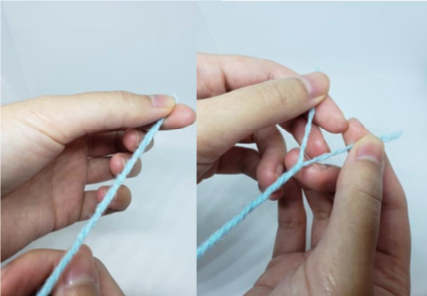
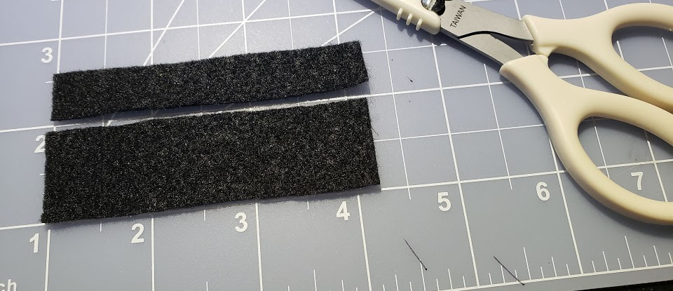

- Abbreviations
- ch = chain
- sl st= slip stitch
- st = stitch
- sc = single crochet
- Sk = skip stitch
- inc = single crochet increase
- Fo = fasten off
- dec = sc decrease / sc2tog / 2 sc together
- hdc = half double crochet
- dc = Double Crochet
- dc-inc = double crochet increase
- Tc = triple crochet
- Most projects require
- Stitch markers
- Yarn needle
- Fiberfill Stuffing
- Stuffing tool (chopstick or pencil)
- Glue gun (optional)
- Pins
- Safety eyes/Brads
Squirtle Sushi Amigurumi
design by OODON; crochet pattern by me
This amigurumi was made under the permission of OODON. Please check out his adorable work and shop!
Materials
- Size 4 Worsted Weight Yarn in light blue, light brown, white
- F hook, D hook, C hook
- Black embroidery thread
- Black and pink felt
- Glue gun
How to make ½ Worsted Weight (WW) yarn: Cut a long strand of yarn, separate the # of strands in half (4 ply → 2 ply). You will now work with the 2 ply to make the Limbs and Limb bands.

Rice: (F hook)
- R1: ch 15, sc 14 (3 sc in last st), turn over, sc 14, inc [31]
- R2: sc 13, inc, sc, inc, sc 13, inc, sc [34]
- R3: inc, sc 33
- R4: sc around [35]
- R5-6: hdc around [35]
- R7: (sc 5, dec) x 5 [30]
- R8: sc around [30]
- (do not turn inside out - to get more of the “rice grains” look.)
- Fo, put stuffing, use long tail to whip stitch closed.
Head (D hook)
- R1: 6 sc in a magic ring
- R2: (inc) around
- R3: (sc) around [12]
- R4: (inc) around [24]
- R5-7: (sc) around
- R8: (sc, inc) around [28]
- R9: (sc) around
- R10: (sc 5, dec) around [24]
- R11: (sc 2, dec) around [18]
- R12: (sc 4, dec) around [15]
Shell/Body: (D hook)
- R1: 6 sc in a magic ring
- R2: inc around [12]
- R3: (sc, inc) around [18]
- R4: sc around [18]
- R5: (sc 2, inc) [24]
- R6: hdc-inc, sc 6, hdc-inc, sc 4, hdc-inc, sc 6, hdc-inc, sc 4 [28]
- R7: sc around
Limbs: (C hook with ½ WW)
- R1: 5 sc in magic ring
- R2: (sc, inc) x2, sc [7]
- R3: (sc 2, inc) x2, sc [9]
- R4-5: sc around [9]
- R6: ch 1, turn, hdc 4 [4]
Limb bands: (C hook with ½ WW)
- ch 9, sc 8, fo. (make 4 total. 1 for each limb)
Tail: (F Hook)
- R1: 6 sc in a magic ring
- R2: sc around [6]
- R3: hdc around [6]
- R4: (hdc, hdc-inc) x3 [9]
- R5-9: hdc around [9]
- R10: ch 1, turn, hdc 5 [5]
- ⇒ curl the top into a swirl. Use a long piece of yarn to crochet through to keep it in place
- ⇒ Do not put any stuffing into the tail, will prevent it from keeping it rolled up
Limb bands: (C hook with ½ WW)
- ch 9, sc 8, fo. (make 4 total. 1 for each limb)
Seaweed wrap:
2 pcs: Pc #1: measure how much you need to wrap your shell. (this will be thinner than #2) Pc #2: measure how much you need to wrap your rice.

Assembly:
- Pin and sew the head, body and tail to the rice first.
- Attach top part of limbs to the bottom of shell.
- Glue gun the seaweeds, then attach white limb bands.
- Use embroidery thread to embroider the closed eyes.
- Cut 2 small ovals of pink felt and glue gun near the eyes
Enjoy your little squirtle sushi! Don’t hesitate to message me for any questions. I respond the fastest on instagram :)